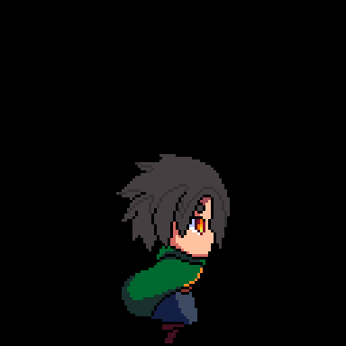

Клик по картинке — увеличить. Почти все превью анимированные: видно настоящую походку, а не отдельный кадр.
itch.io не отдаёт файлы скриптом — там форма скачивания. Поэтому здесь официальные превью авторов, а сам пак качается по кнопке «скачать пак» на карточке (все отмеченные — бесплатные). Отметь ✓ на том, что нравится, — и я заберу выбранные и разложу по кадрам, как делал с Kenney.
Из 25 паков полный набор «бег + прыжок + лазанье + плавание» есть ровно у одного (La Red Games, 32×32, CC0). Остальные дают idle/run/jump, иногда лазанье. Это не моя лень — так устроен бесплатный рынок: паки затачивают под бой, а не под лазанье по лианам.
Отсюда два честных пути:
| путь | что получаем | чем платим |
|---|---|---|
| Взять La Red Games | всё нужное сразу, ноль дорисовки | стиль простой, 32×32, до рефа не дотягивает |
| Взять красивый пак и дорисовать 2 анимации | вид как на рефе | Сергею рисовать лазанье и плавание — это ~6–10 кадров |
Второй путь дешевле, чем кажется: лазанье — это 2 кадра со спины, плавание — 2–3 кадра. Всё остальное (бег, прыжок, покой, падение) уже готово.
На itch лицензию ставит автор, единого правила нет. Помечено: CC0 — подтверждённый CC0; читать на странице — бесплатный, но условия надо глянуть перед релизом. Ссылка на страницу есть на каждой карточке.
Оставляю, чтобы не потерялось. Плюсы у неё были: единственный источник, где плавание есть из коробки, и вектор не конфликтует со свечением. Минус, из-за которого всё и развалилось — у персонажей нет лица и характера.